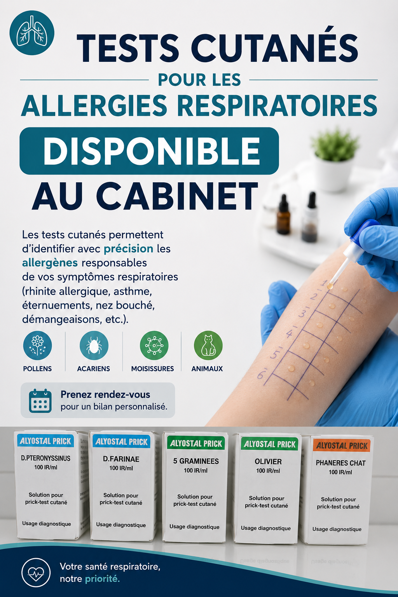

بيلان الحساسية ببوسكورة وفيل فيرت
الدكتور هواري عادل يتولى بيلان ومتابعة الحساسية في العيادة ببوسكورة. اختبارات Prick tests متاحة في الحال — التهاب الأنف التحسسي، الربو، العطاس، الحكة، انسداد الأنف.
اختبارات جلدية متاحة في العيادة
تتيح اختبارات Prick tests تحديد مسببات الحساسية المسؤولة عن أعراضك التنفسية بدقة. النتيجة متاحة في نفس الجلسة دون انتظار.
المواد المختبرة :
- حبوب اللقاح (النجيليات، الزيتون...)
- عث الغبار (D. pteronyssinus, D. farinae)
- شعر القطط
الأعراض المعنية : التهاب الأنف التحسسي، الربو، العطاس المتكرر، انسداد الأنف، الحكة، التهاب الملتحمة التحسسي.
حجز موعد
حجز موعد
عبر الهاتف
عبر واتساب
أوقات العمل
- الاثنين – الجمعة (صباحاً)
- 10:00 – 12:30
- الاثنين – الجمعة (مساءً)
- 16:00 – 18:00
- السبت
- 09:30 – 13:00
- الأحد
- مغلق
نموذج الاتصال
أسئلة شائعة
أين يمكن إجراء اختبار الحساسية ببوسكورة؟
يُجري الدكتور هواري عادل اختبارات Prick tests مباشرة في العيادة ببوسكورة، دون الحاجة إلى التنقل إلى الدار البيضاء. للحجز: +212 7 17 17 30 88.
أي طبيب أستشير للحساسية ببوسكورة؟
الدكتور هواري عادل طبيب عام ببوسكورة متخصص في أمراض الحساسية، يتولى بيلان ومتابعة الحساسية التنفسية، ويُجري اختبارات Prick tests في العيادة مع توجيهك نحو أخصائي عند الحاجة.
ما هو اختبار Prick test؟
Prick test هو اختبار جلدي سريع: تُوضع قطرات صغيرة من مستخلصات مسببات الحساسية (حبوب اللقاح، عث الغبار، شعر القطط...) على الساعد، ثم تُجرى وخزة خفيفة. رد الفعل المحلي يُشير إلى الحساسية تجاه المادة المختبرة. النتيجة في 15 إلى 20 دقيقة.
هل اختبار Prick test مؤلم؟
لا. الاختبار سريع وغير مؤلم في الغالب، ويتحمله البالغون والأطفال بشكل جيد.